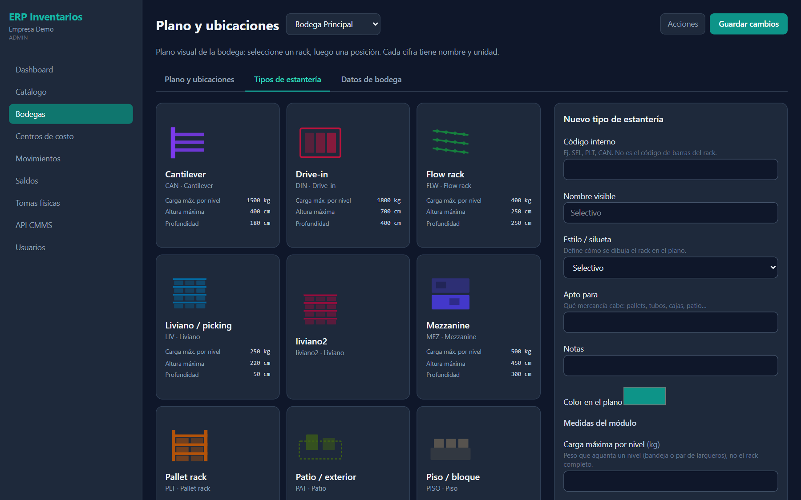
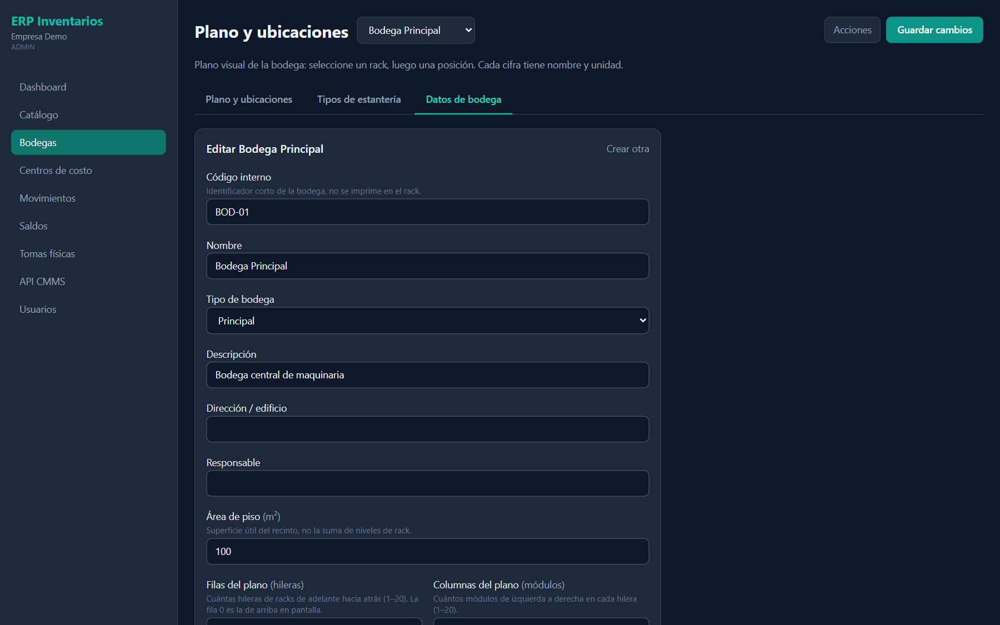

Portal
Plano y ubicaciones
Plano visual de la bodega: seleccione un rack, luego una posición. Cada cifra tiene nombre y unidad. Solo se dibujan los módulos que usted crea (el plano es 100 % dinámico).



Cómo se usa el plano
- Elija la bodega en el selector junto al título (o toque su tarjeta).
- Toque un rack en la cuadrícula: abajo aparece Frente · Pasillo X · Rack Y con niveles (altura) y posiciones (izquierda → derecha).
- Toque una celda del frente: el panel Posición seleccionada muestra la etiqueta de escaneo y el detalle. Use Copiar para imprimir etiquetas.
- Edite el módulo en el formulario lateral y pulse Guardar cambios (arriba a la derecha) o el botón del formulario.
Disponible
Reservada / alta ocupación
No disponible / llena
Encabezado, plano y panel lateral
| Campo / control | Qué es | Cómo usarlo |
|---|---|---|
| Selector de bodega | Bodega que se muestra. | Cambia plano, tipos y datos. |
| Acciones | Abre la pestaña de datos de la bodega. | Para editar o crear bodegas. |
| Guardar cambios | Envía el formulario de la pestaña activa. | Equivale al botón verde del formulario. |
| Tarjeta de bodega | Tipo, nombre, “COD · N módulos · plano F×C” y barra Ocupación X % · a/b posiciones. | Vista rápida de llenado. |
| Todas las ubicaciones / Filtros | Filtro visual del plano. | Todas, Con ocupación o Disponibles. |
| − / % / + / Reset | Zoom del plano. | Reset vuelve a 100 %. |
| Filas A, B… / Columnas 01, 02… | Coordenadas de la cuadrícula. | Ubique el rack como en el piso real. |
| Etiqueta de escaneo | Texto legible de la posición, ej. Pasillo A · Rack R02 · Nivel 04 · Posición 01. | Copiar lo deja en el portapapeles. |
| Detalle | Código (A-R02-04-01), Rack, Fila, Columna, Nivel, Tipo de estantería, Capacidad máxima y Estado. | El Código es lo que lee la app o la pistola. |
Campos · Módulo de estantería (rack)
| Campo / control | Qué es | Cómo usarlo |
|---|---|---|
| Tipo de estanteríaObligatorio | Plantilla física del rack. | Primero cree el tipo en su pestaña. |
| PasilloObligatorio | Letra o número del corredor (ej. A). | Forma parte del código de cada posición. |
| Código del rackObligatorio | Etiqueta del módulo (ej. R07). | Se usa en el código de barras de cada posición. |
| Niveles de altura (pisos) | Cuántos pisos tiene (1–20). El nivel 01 es el más bajo. | Al guardar se regeneran las posiciones. |
| Posiciones por nivel (huecos) | Huecos de izquierda a derecha en cada piso. | Cara de picking. |
| Fila en el plano / Columna en el plano | Casilla del mapa (contando desde 0). | 0 = primera hilera arriba / primer módulo a la izquierda. |
| Capacidad de este módulo (kg)Opcional | Carga total del módulo. | Vacío = usa la carga del tipo de estantería. |
| Generar posiciones / Guardar módulo y posiciones | Crea o actualiza el rack y sus ubicaciones. | Muestra “N ubicaciones en este módulo”. |
Campos · Tipo de estantería
| Campo / control | Qué es | Cómo usarlo |
|---|---|---|
| Código internoObligatorio | Ej. SEL, PLT, CAN. No es el código de barras del rack. | Corto y único. |
| Nombre visibleObligatorio | Nombre que se muestra (ej. Selectivo). | — |
| Estilo / silueta | Define cómo se dibuja el rack en el plano. | Selectivo, Pallet rack, Cantilever, Liviano, Drive-in, Push-back, Flow rack, Mezzanine, Piso, Patio. |
| Apto paraOpcional | Qué mercancía cabe: pallets, tubos, cajas, patio… | Ayuda al acomodo. |
| NotasOpcional | Observaciones. | — |
| Color en el plano | Color del módulo en la cuadrícula. | Distinga tipos a simple vista. |
| Carga máxima por nivel (kg) | Peso que aguanta un nivel, no el rack completo. | Parametrización física. |
| Altura máxima del módulo / Profundidad / Ancho del módulo (cm) | Medidas del módulo. | Documentación del rack. |
| Registrar tipo / Guardar tipo | Guarda la plantilla. | “Nuevo” limpia el formulario. |
Campos · Datos de bodega
| Campo / control | Qué es | Cómo usarlo |
|---|---|---|
| Código internoObligatorio | ID corto (ej. BOD-01). | Se usa en reportes y en la API CMMS. |
| NombreObligatorio | Nombre operativo (ej. Bodega Principal). | — |
| Tipo de bodega | Principal, Satélite, Patio, Sótano, Consigna, Tránsito, Producción. | Clasificación operativa. |
| Descripción / Dirección / edificio / ResponsableOpcional | Datos de referencia. | Útiles para auditoría. |
| Área de piso (m²)Opcional | Área del recinto. | No es la suma de niveles. |
| Filas del plano (hileras) | Hileras de adelante hacia atrás (1–20). | Define el alto de la cuadrícula. |
| Columnas del plano (módulos) | Módulos de izquierda a derecha (1–20). | Define el ancho de la cuadrícula. |
| Crear bodega / Guardar cambios | Guarda la bodega. | “Crear otra” limpia el formulario. |